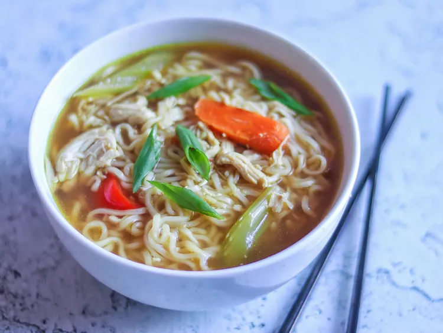

Ramen Chicken Noodle Soup
Home

Description
This tasty ramen chicken noodle soup with a zesty Asian flair features chicken broth, soy sauce, garlic, ginger, and colorful vegetables, and it's ready in less than 30 minutes.
Ingredients
- 3 ½ cups chicken broth (such as Swanson Original, Natural Goodness, or Organic Chicken Broth)
- ½ red bell pepper, cut into 2-inch-long strips
- 2 green onions, sliced diagonally
- 1 medium carrot, sliced diagonally
- 1 stalk celery, sliced diagonally
- 1 clove garlic, minced
- 1 teaspoon soy sauce
- 1 teaspoon ground ginger
- 1 pinch black pepper
- 1 cup cooked, shredded boneless, skinless chicken breast meat
- 4 ounces uncooked ramen noodles, broken into pieces